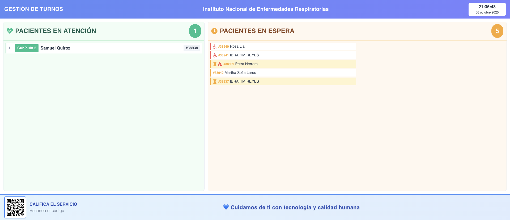
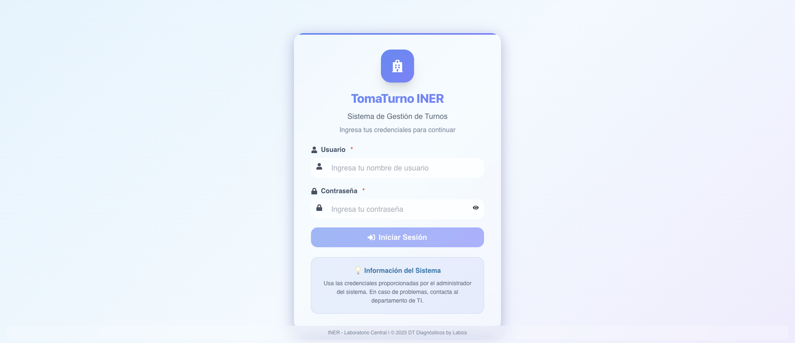
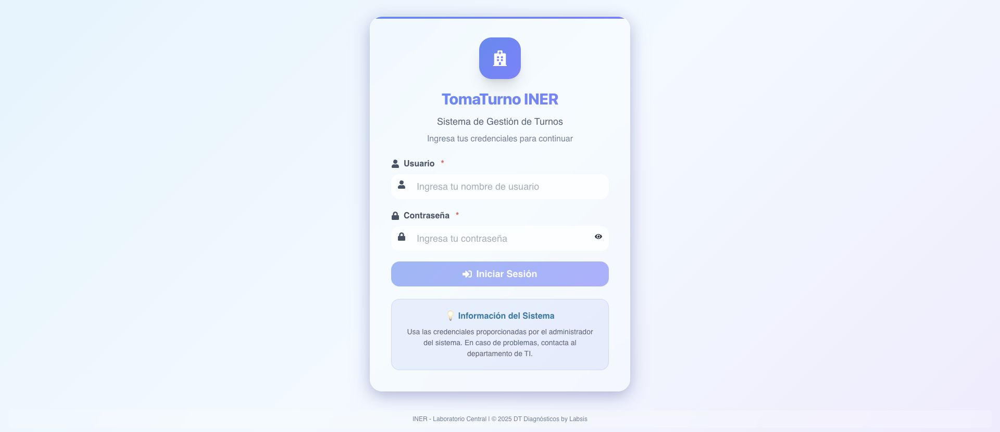
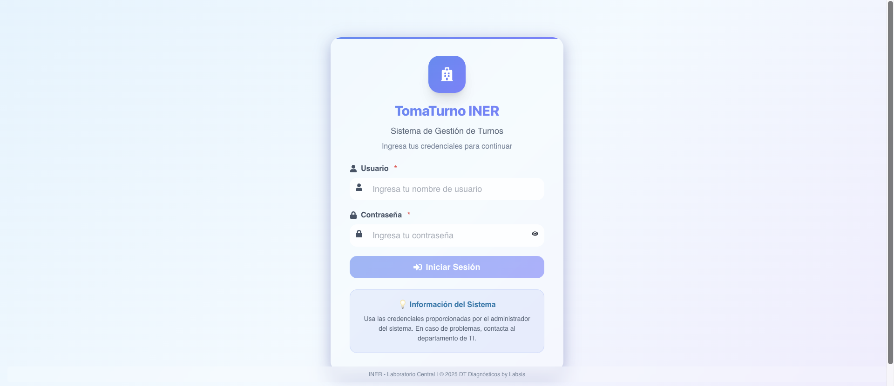

🧪 Reporte de Pruebas Visuales - v2.6.1
📊 Resumen
✓ Completado
Total de screenshots: 6
Fecha: 2025-10-06 21:37:17
Sistema: Toma de Muestras - INER
📸 Screenshots Capturados
1. 01 Queue Page Initial

Archivo: 01_queue_page_initial.png
2. 02 Login Page

Archivo: 02_login_page.png
3. 03 Attention Page Initial

Archivo: 03_attention_page_initial.png
4. 04 Attention Page Analyzed

Archivo: 04_attention_page_analyzed.png
5. 05 Scrolled Middle

Archivo: 05_scrolled_middle.png
6. 06 Full View Final

Archivo: 06_full_view_final.png
✅ Verificaciones Realizadas
- ✓ Página de cola pública cargada correctamente
- ✓ Login funcional con credenciales de administrador
- ✓ Página de atención accesible
- ✓ Interfaz responsive y elementos visibles
- ✓ Botones principales detectados
📝 Notas
Para ver los colores específicos (ámbar #f59e0b) de los iconos, revisar los screenshots directamente.
Los cambios implementados en v2.6.1 incluyen:
- Nuevo color ámbar para iconos de pacientes diferidos
- Botón "Regresar a Cola" con estilo mejorado
- Iconos de tamaño optimizado
- Ordenamiento mejorado de pacientes